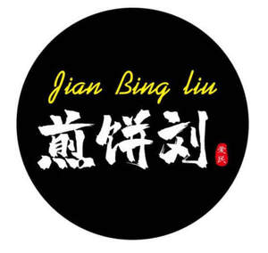

Trade Mark Journal No.2025/051 19 December 2025
UK00004306542 7 December 2025 (29,30,32,43)

- Class 29
- Packaged foods that are meat / egg / vegetable - based fillings; Meat-based snack foods; Potato-based snack foods; Vegetable-based snack foods; Yogurt drinks; Snack food (Fruit-based -); Fruit-based snack food; Cheese-based snack foods; Soy-based snack foods; Milk drinks; Yoghurt drinks; Dairy-based beverages; Nut-based snack foods; Meat-based snack food; Potato snack foods; Yoghurt beverages; Vegetable-based snack food; Milk-based beverages; Sweet corn-based snack foods; Milk beverages; Flavoured milk drinks; Fruit based snack foods; Yogurt-based beverages; Fish-based snack food; Milk drinks containing fruits; Seaweed-based snack food; Flavoured milk beverages.
- Class 30
- Petit fours; Flavourings of tea for food or beverages; Grain-based snack foods; Flavourings of lemons for food or beverages; Processed seeds used as a flavoring for foods and beverages; Rice-based snack foods; Flavourings of almond for food or beverages; Corn-based snack foods; Wheat-based snack foods; Flavourings for foods; Vanilla flavourings for food or beverages; Flavourings for beverages; Cereal-based snack food; Snack food (Cereal-based -); Snack foods made from cereals; Fruit flavourings for food or beverages, except essences; Coffee drinks; Cereal snack foods flavoured with cheese; Flavorings for beverages; Cereal breakfast foods; Snack foods prepared from maize; Chocolate beverages; Drinks prepared from chocolate; Chocolate food beverages not being dairy-based or vegetable based; Cereal based snack foods; Tea-based beverages; Beverages (Tea-based -); Snack food products made from cereals; Snack food (Rice-based -); Rice-based snack food; Chocolate-based beverages; Beverages (Chocolate-based -); Oat-based foods; Chocolate-based beverages with milk; Multigrain-based snack foods; Coffee beverages; Cocoa drinks; Chocolate-based ready-to-eat food bars; Tea-based beverages with fruit flavoring; Drinks flavoured with chocolate.
- Class 32
- Carbohydrate drinks; Vegetable drinks; Fruit drinks; Non-alcoholic fruit drinks; Non-alcoholic drinks; Frozen fruit-based drinks; Fruit-based beverages; Smoothies [non-alcoholic fruit beverages]; Cola drinks; Juice drinks; Fruit flavored drinks; Non-alcoholic vegetable juice drinks; Vegetable-based beverages; Frozen fruit drinks; Fruit beverages; Fruit beverages (non-alcoholic); Fruit flavoured drinks; Frozen fruit-based beverages; Syrups for beverages; Low-calorie soft drinks; Carbonated non-alcoholic drinks; Non-alcoholic beverages; Beverages (Non-alcoholic -); Sorbets [beverages]; Powders used in the preparation of fruit-based drinks; Vegetable juices [beverages]; Non-alcoholic beverages flavoured with coffee; Non-alcoholic beverages flavored with coffee; Fruit juice beverages (Non-alcoholic -); Non-alcoholic fruit juice beverages; Cordials (non-alcoholic beverages); Sherbets [beverages]; Non-alcoholic beverages containing vegetable juices; Squashes [non-alcoholic beverages]; Fruit-flavored beverages; Non-alcoholic beverages containing fruit juices; Fruit-flavoured beverages; Fruit flavoured carbonated drinks; Fruit juice drinks; Non-alcoholic beer flavored beverages; Fruit-based soft drinks flavored with tea; Energy drinks; Colas [soft drinks]; Isotonic non-alcoholic drinks; Guarana drinks; Non-alcoholic beverages with tea flavor; Whey beverages; Non-alcoholic soda beverages flavoured with tea.
- Class 43
- Serving food and drinks; Catering of food and drinks; Preparation of food and beverages; Food and drink catering; Catering of food and drink; Catering (Food and drink -); Provision of food and beverages; Preparation of food and drink; Serving food and drink for guests in restaurants; Providing food and beverages; Serving food and drink in restaurants and bars; Provision of food and drink in restaurants; Serving food and drink for guests; Take-away food and drink services; Takeaway food and drink services; Food and drink catering for cocktail parties; Providing food and drink in bistros.
Jian Bing Liu Limited